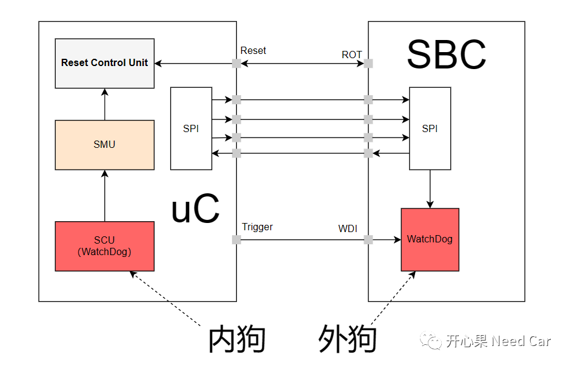
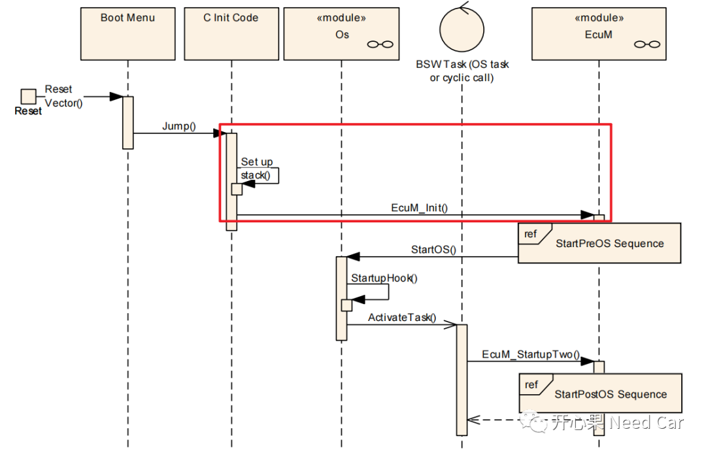
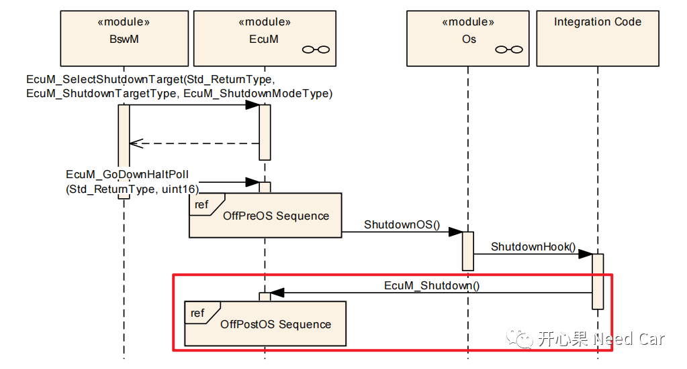

开心果 Need Car · 2023-05-09T18:25:00+08:00 · 微信原文
为了保证软件运行的鲁棒性，常常在软件设计中，启用看门狗功能。什么是看门狗呢？答：简单说，看门狗就是一个定时器（Timer）。如果没有在规定的时间内触发（Trigger）预期动作，则认为软件运行异常，进而程序进入异常处理程序，eg：执行Reset动作。一般的异常处理是软件复位，为什么要软件复位呢？答：异常的出现，可能是某些极端工况或者偶发状况导致，如果一个复位动作可以及时将程序拉回正常，可有效避免车辆故障等危险事件。
1、看门狗分类
工程中，一般来说，外狗置于电源管理芯片（SBC：System Basic Chip）的内部，而内狗置于主芯片（uC）中，关系示意如下：

（一）Autosar中的Watchdog
工程中，用得最多的监控功能是Alive Supervision。如果仅使用看门狗的Alive Supervision功能，意味着喂狗动作需要在监控的周期性Task中执行。如果Task被周期性地调度，意味着操作系统（OS：Operation System）的启动。如果软件架构按照Autosar开发，OS在被启动之前和关闭之后的代码出问题怎么办呢？
2、为什么需要外部看门狗

对于启动阶段，程序运行异常，如何监控呢？答：使能外部看门狗。即：在软件初始化之初，使能外部看门狗，由于外部看门狗独立于uC，一旦使能，uC必须进行喂狗操作。如果程序在初始化过程中，由于异常而没有给外部看门狗喂狗，就会导致外狗超时，进而触发uC的异常处理（eg：Reset），以此确保程序初始化过程中的稳定性。
提示：工程中，一般采用中断的方式喂外狗。
（二）软件Shutdown阶段的监控盲区
当Os关闭以后，如果程序中还有一些手动代码（下图红框部分），如果在此期间程序运行异常，eg：程序进入while(1)，使得ECU无法正常休眠。此时的内狗已经关闭，无法监控到此异常，怎么办呢？答：使能外狗。

3、看门狗的喂狗原理
注意：外狗一旦被外部使能，一般不会关闭
往期精彩回顾
从CAN Transceiver角度，理解两帧网络管理报文唤醒网络的原理
Bootloader开发：为什么需要SBL（Secondary Bootloader）?
Autosar EcuM：APP由RUN到POST_RUN浅析